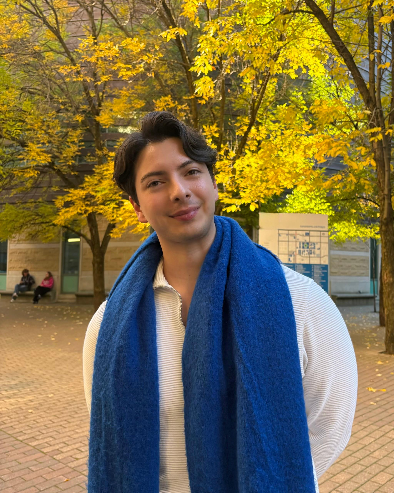

About Me

My name is Mauricio Padilla Quintero. I am a Colombian student living in Toronto, Canada. I have studied social communication, journalism, and marketing, which have helped me develop different skills in the communication field.
My journey has been shaped by my interest in creativity, storytelling, and digital media. I enjoy exploring different ways to communicate ideas, create content, and connect with audiences.
My Skills and Abilities
Through my studies and professional experience, I have developed several skills, including:
My Professional Experience
Communication and Digital Media
I have experience in internal and external communications, stakeholder management, social media, and data analysis. I also work with content creation, communication strategies, and performance reports to help organizations communicate more effectively.
Contact
Email: mauriciopaqu@gmail.com
You can also find me on Instagram .